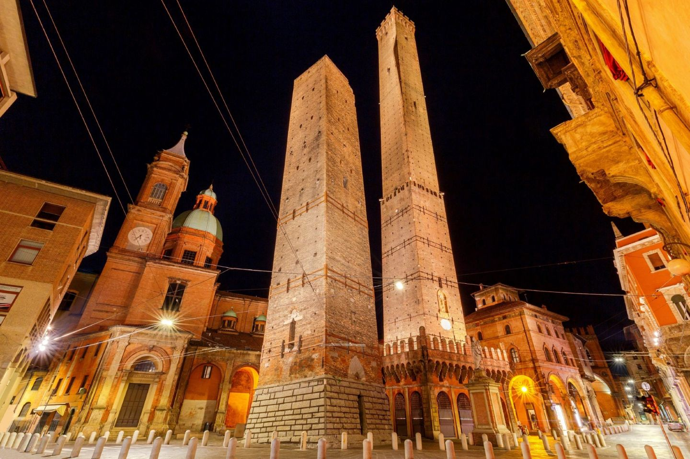
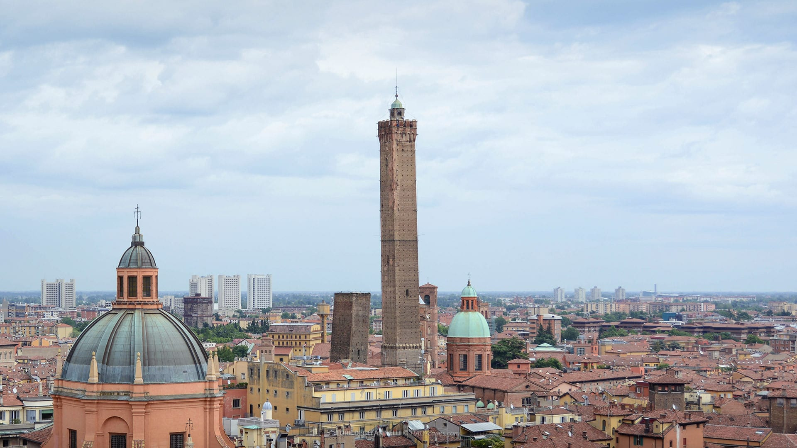
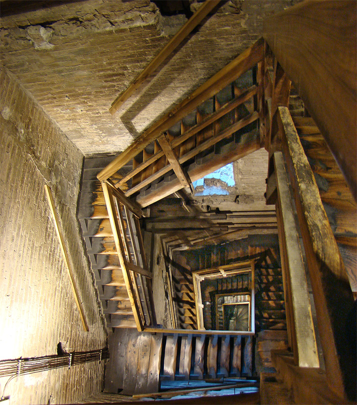
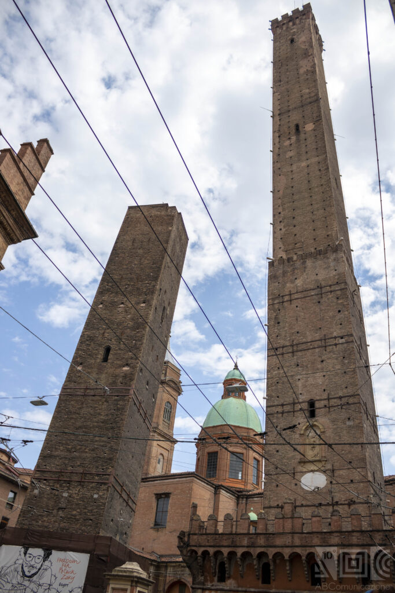
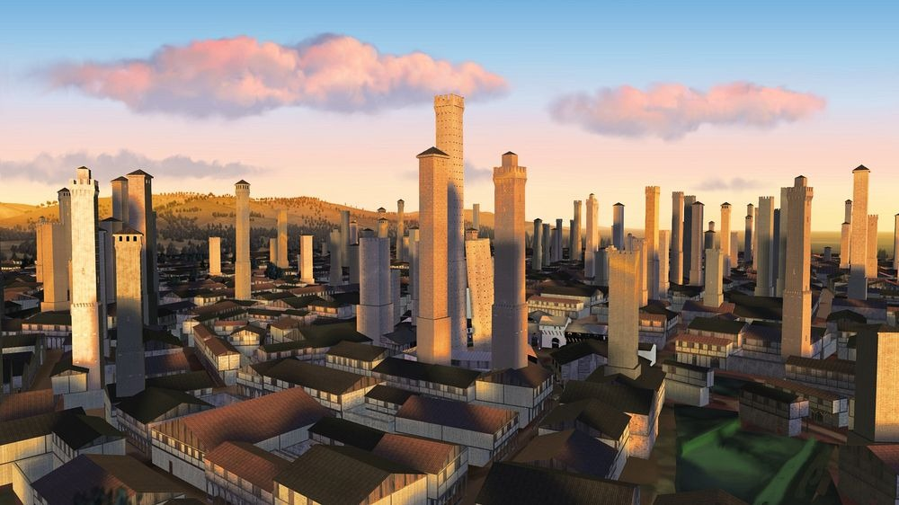

Discovering Bologna
A Journey Through History, Culture & Innovation
Myths and Curiosities of the Two Towers of Bologna: Garisenda and Asinell
Author: Alberto Belli
CEO and Content Creator of Bologna-Experience
One of the most representative symbols of the city of Bologna are the Two Towers: Asinelli and Garisenda. Discover with us the legends and curiosities about them.

Two Towers of Bologna: Garisenda and Asinell
Where are located the two towers?
The two towers of Bologna are located at the end of St. Rizzoli, in front of the square of Porta Ravegnana. It’s easy to see them thanks to their height that is 97 meters for the Asinelli tower and 47 meters for the Garisenda tower. They can be seen from the beginning of St. Ugo Bassi and usually, especially in winter at evening, red and blue led lights (which are the colours of Bologna’s city) are put at the base of Asinelli tower.
Also a short walk from the iconic Two Towers, you will find the ancient Jewish ghetto of the city, with many symbols and memories of the history of this neighborhood.
The two towers are one of the most iconic monuments of the city, along with Piazza Maggiore and the Basilica of San Petronio. Once you arrive in front of the basilica, do not miss the Neptune Fountain: did you know that this is one of the seven secrets of Bologna, just like the Asinelli Tower?
In addition, the Two Towers are located in the heart of the city: near them is also the famous area of the Quadrilateral. Here have historically housed many shops and taverns, where you keep faith with the ancient art of pasta sheets and fresh pasta. Here are some tips on the best trattorias to try, to immerse yourself in the gastronomic flavors of Bologna, including the restaurant I Carracci and the Osteria dell’Orsa. Also in the area of the Quadrilatero you can also find local where you can make a tasty and authentic aperitif in Bolognese style!
The myth of Asinelli’s tower
We can’t talk about this medieval monument if we do not mention his myth. The myth says that one day a farmer found a treasure thanks to his donkeys’ instinct. This treasure, made of gold and silver coins, was safeguarded with secrecy until one day the son asked his father to build the bigger tower of the entire city to marry his lover. So the father, who loves his son so much, gives to him the treasure.
In this way, the son built the tower that was named “Asinelli”, in respect to the animals that gave a lot of luck to the father. Obviously aren’t this the real origins of the tower: the real father is Gerardo Asinelli that, to raise his reputation and to have a safe place, decided to build it
If you are a true fan of the ancient history of Bologna and every story related to the city, you can not miss the Salaborsa Library, with its rich archive of documents and books: once this has welcomed the botanical garden of Bologna, which is now located in Via Irnerio and is one of the headquarters of the University of Bologna. The university also has various locations scattered among the palaces and historic complexes of the city, such as San Giovanni in Monte, now the department of History, Culture and Civilization; once it was a monastic complex and even a prison!

the Asinelli Tower
Why is there a bloody cage in the Asinelli tower?
The Asinelli tower was built around the year 1000, exactly between 1019 and 1119. During his life was used for various functions like: crowd convocation, warning and notice of rejoicing. The tower had also macabre functions like imprisonment and torture place for people that were senteced to the capital punishment but, most of all, for religious people who had commited crimes.
The victims were brought to the cage, placed 20 meters high, where after days of fast, died mocked by people.
Initially this form of torture was made inside Palazzo del Podestà but at the end this cages were collocated at the side of Asinelli tower so the population was able to see the criminals died.
The cannon’s ball of the Two Towers

Inside the Asinelli Tower
In 1500 year happened a strange fact for the time: a cannon’s ball made by lead, hit Asinelli tower. How was it possible? An attack made by a bordering city? The beginning of a civil war? A supremacy act made by a noble family? None of this. This ball made of eight pounds, was shot from Porta Maggiore in occasion of some celebrations, but fortunately the Asinelli tower was safe.
Although it’s a building of 1109, it’s not easy to destroy the tower, in all his story was hit from numerous fires that, at worst, destroyed the wood staircase.
The bigger problems that the tower suffered were made by the lightning that during centuries hit the building, until 1824 when was placed a lightning conductor.
Do you know that…
In his story, the Asinelli tower had particular functions, not only di institutional ones but also di scientistic.
The experiment consisted in falling down a ball of lead from the top of the tower and to analyze the deviation from the starting point and the end point. Despite the complication, the scientist Gian Battista Guglielmi, reached significant results that were introduced in the book “De diurno Terrae motu” which received a lot of agreements from the scientist community. In the second world war, the Asinelli tower was also used with sighting functions: usually, at the beginning of a bombardment, four people went up the tower and looked at the damaged territory to send as best the rescued. Currently, at the top of the Asinelli tower, there’s also a tv transmitter from the famous italian television network RAI.

The fame of Garisenda tower
The Garisenda tower built around 1000 year, exactly in 1110 from the representative of Bologna’s city hall, it’s 47,5 meters high. It’s said that in the past the tower was 60 meters high but for some structural problems was periodically reduced. For these reasons it has the characteristic of being leaning of 4 grades, exceeding the inclination of the most famous hanging tower of the world, the Pisa tower.
View of Garisenda Tower from the Asinelli Tower
Later, the Bolognese’ consortium entrusted the tower to one of the most noble families of the city, the Garisendi, the name infer from here. Although the Garisenda tower is half-light compared to the height of Asinelli tower, his architectural fame is accompanied by verses and quotes of artists that with their works had sublimate the myth, like Johann Wolfgang Goethe who wrote: “We walk indifferent under the straights towers, while we search for for the leaning one.” Dante Alighieri, on the XXXI poem, mentioned the Garisenda comparing it to the giant Anteo, son of Poseidon: “Qual pare a riguardar la Garisella sotto il chinato – tal parve Anteo a me che stava a bada di vederlo chinare”.
About Dante, the poet after his visit to Bologna was so impressed by the Complex of Seven Churches that he referred to it in his work. In addition, in this Basilica there is a crypt, the Crypt of Santo Stefano, still open today: but it is not the only crypt in the city that you can visit, come and discover them all in our article on Underground Bologna! To learn more, read our article The Basilica of Santo Stefano: history and legends.
There are other towers in Bologna?
Bologna owned numerous towers during his story, not only two like the most famous Asinelli and Garisenda; during its greatest time it counted 100 towers and someone says that there were 200. The reason for these multitudes of towers it’s not clear: probably these structures were used as building’s attack and for defense during the period of the war for the investitures. In rare cases they were used as residences and named homes-towers.

A computer generated 3D model of mediaeval Bologna. Photo credit: www.cineca.it
Over the XIII century (1200), the towers were subjected to numerous changes, they were cut off, rebuilded until the 1920, when were felled the last towers: Artenisi and Riccadonna. Actually in the cities there are 22 towers which are: Azzoguidi tower, known as Altabella; Prendiparte tower, known as Coronata; Scappi tower, Uguzzoni tower, Guidozagni tower, Galluzzi tower.
When can I visit the towers?
Unfortunately the Asinelli tower is the only one visitable, every day from 9.30 a.m. to 7.30 p.m.
I beg of you, the myth says that if you’re a university student it’s better not to come up or your time to graduate can protract considerably.
How much does it cost to visit the Asinelli tower?
The ticket costs:
- € 5,00 p/person
- Reduced price: € 3,00 p/person (children 4 to 11 y.o.; over 65; school trips; university students; Card Cultura Holders)
Bibliography:
- Bernabei G., Le due torri di Bologna, Santarini, 1992.
- Roversi G., Le due torri di Bologna. Quando, come e perchè, Bologna, Fondazione del Monte, 2011.
- Trombetti A. L., Pasquini L., Bologna delle torri. Uomini pietre artisti dal medioevo a Giorgio Morandi, Firenze, EDIFIR, 2013.
Source: Bologna-Experience
Do you like what you see?
Our user-friendly interface allows you to seamlessly navigate between articles and visualize their locations on an interactive map, while our commitment to editorial excellence ensures that every piece is engaging, informative, and accurate. The Discovering Bologna team has meticulously crafted every typographic detail, from font families and sizes to colors, margins, aspect ratios, and captivating images with captivating captions, to truly reflect the graphic theme and ambiance of this captivating city.
Join us on this digital adventure and explore the wonders of Bologna like never before, all from the comfort of your own home. Discovering Bologna: Unraveling the secrets of the city, one story at a time.